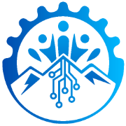

I teach machines
to find their way.
Robotics & SLAM engineer. I build autonomous systems from the silicon up — ROS 2 stacks, embedded C++, sensor fusion, and the scrappy hardware that has to survive the real world.
01 The engineer
I'm a robotics engineer working out of Buea, Cameroon, building toward one specific thing: SLAM — making a machine understand where it is while it maps somewhere it has never been.
I learn by shipping. Instead of tutorials I run public, dated challenges against myself — ten months of ROS 2 in the open, a running log of SLAM fundamentals — and every one of them lives on GitHub, unfinished parts included.
The projects below sync straight from those repositories. What you see is what is actually on the bench right now, not a curated highlight reel.
- Based in
- Buea, Cameroon
- Focus
- SLAM & autonomy
- Languages
- C++ · Python · C
- Role
- Co-founder, PlastiBytes
- Community
- HWIVC, Buea
02 Field log
Live from GitHub. Descriptions, topics, cover images and commit dates sync themselves — click any card to open its dossier.
No project matches that.
03 Systems I speak
Hover a card — the bars show roughly where my hours have gone.
Robotics middleware
- ROS 2 (Humble / Jazzy)
- Nav2 & behaviour trees
- tf2, URDF, Gazebo
- micro-ROS
Perception & state
- SLAM — EKF, graph, visual
- Sensor fusion (IMU + encoders)
- OpenCV & point clouds
- Edge Impulse / TinyML
Embedded
- C / C++17
- Arduino, ESP32, XRP
- Motor control & odometry
- PCB bring-up, I²C / SPI / UART
Toolchain
- Python 3
- Linux, bash, colcon
- Git & CI
- CMake
04 Trajectory
Where the work is heading, and what it took to get here.
-
Mar 2025 — Dec 2025
The ten-month ROS 2 challenge
Ten months, one discipline: a public, dated log of ROS 2 projects and resources built in the open. Nodes, navigation, simulation — shipped incrementally rather than perfectly.
-
Ongoing
Road to SLAM engineer
Working through the fundamentals autonomy actually rests on — probabilistic state estimation, transforms, loop closure — alongside the Hardware Innovation Valley Community in Buea.
-
Now
Hardware that leaves the bench
ArIa-Roomba, pick-and-place arms, Project NYX. Less demo, more device: things that run unattended and survive contact with the real world.
05 Where I build
The company I help run, and the community I build it inside of.
PlastiBytes
Co-founder
Building the software and hardware side of PlastiBytes — turning ideas into products that actually ship, out of Cameroon.
plastibytes.com ↗ Community
Hardware Innovation Valley Community
Member · HWIVC
The hardware community in Buea — where the boards get soldered, the robots get tested, and the next batch of engineers gets built.
hwivc.org ↗
Building something
that has to move?
Open to robotics collaborations, research and hardware work.